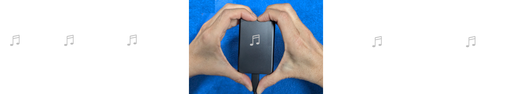

When I access my music collection, it starts playing a song I haven't heard in a while. The energy level matches where I'm at, and I'm ok with the amount of listening challenge the song wants. I can let my collection know if I'm working and need to focus, or if I only want songs I'm comfortable playing with other people around. It agrees with me about what "ambient" or "dance" means, doesn't overplay songs, and continuously selects appropriate music until I tell it to stop after the next song finishes.
No, I did not make my music collection alive. I think it was already alive, it just needed some of me mixed in with the pile of media files. No AI or other people's opinions, just me.

It took years for this relationship to grow, and most of that time was not spent particularly wisely or effectively. Learn from my flailing.
When I first made an effort to improve my collection listening, I thought I was figuring out how to organize my music collection, trying all kinds of categorizing by genre, subgenre, time period and whatever else seemed helpful. The result was a very accessible collection, but my typical listening still had me selecting the first reasonable thing I found, and it was taking progressively longer to find things I hadn't heard recently. My extensive efforts to index my music collection eventually got in the way enough I sorted by last played time and searched from the back of stack. That was more interesting for a while, but searching still got tedious, and I was reflexively skipping things I had skipped before. Shuffle avoided searching, but it wasn't great for continuous listening.
For quite a while, that was the state of my collection relationship, but I continued to wish things could be better. Eventually I realized that my pile of music files couldn't really do more without information about what I personally wanted to hear. That data cannot be derived from file descriptions or file content analysis, nor can it be provided by others for me. Unsure how to move forward, my hope was that situational annotation might help, so for two weeks of everyday life, various gatherings with other people, leisure activities, travel by plane, train, bus and automobile, I tagged the music I listened to with the situation I was in. Then I went back and tagged all those songs for every other situation they would also work in. The result was a lot of tagging. Too much. Not only was it tedious to annotate, it was starting to feel like a harder way of making those instantly stale playlists without the joy of actually crafting a mixtape.
To move forward through the cloud of tags, I tried converting to scalar variables. After numerous iterations through too many tags, followed by numerous iterations through too many scalar variables, I eventually reduced what I wanted into a half dozen analog-style sliders similar to a music mixer. The result was easy and powerful selection that would play continuously, but it was also clear the data entry was an unsustainable hassle. Data entry needed to be minimized, and ideally should happen seamlessly while I'm listening anyway. Incrementally better collection listening without separate data entry.
The next few years were spent factoring and iteratively refining. The half dozen sliders got reduced to two, combined with toggles for selection scope. Each model was implemented and put to work on my ever growing collection of 10k+ songs distributed across an archival range of genres, styles, time periods, and geography. With each substantive refinement, I would start over from scratch. As the model got better, the test cycles went from weeks, to months, to years. Eventually my collection knew enough about me that it could respond to what I wanted to hear, with minimal input. Since the model automatically dug through my stacks, I called it Digger.
Having my music collection play what I wanted to hear anytime was great, but it was only on my computer. I wanted the same collection listening interaction on my phone, even if I only had some portion of my music files downloaded. My collection needed to sync across devices to update what I've listened to and what my impressions were. Having my data backed up wouldn't hurt either.
Running a server and getting apps on phones is interesting, but also frequently tedious. In the background I started thinking about how my own collection listening, and other people's collection listening, fits into the ever expanding music universe. The music universe expansion is asymptotic, and it was years ago we passed the point where there was more recorded music available than any one person could hear in a lifetime. Meanwhile the percentage of remarkable music is small, and not everyone agrees about which music that is. If listeners with compatible music tastes could collaborate, they could help each other find the great music they want to hear. Collaborative listening could be possible.
Many listeners, myself included, actively connect with others to point out great music. For anyone with substantial music knowledge, these interactions are inherently limited because there is so much musical response to convey, and communicating well through language is not easy. We try to talk about our musical response as feelings, appreciation of craft, reflections of culture in time, expressions of ourselves and more, but it's complicated, and the same music recording evokes different things for every individual listener because people have different backgrounds. Sometimes our impressions are similar, sometimes not. We might both like a recording or not. We might both like the song or not. We might find it easier to talk about more concrete aspects of a recording such as production or categorization. Or artist personalities. Or fans. Or packaging and marketing. Or whatever else that isn't so much about our personal musical response.
Chatting is fun, but any real help navigating the music universe will require higher information flow and easier description.
So I have my collection listening data, and you have your collection listening data. Using our data, I could request a suggestion from you whenever I want, and immediately get back a suggested song I don't already know, that you think is a good match for my current listening situation. You just gave me one of your best song suggestions automatically. Likewise, you could request a song suggestion from me, or any other music friend, whenever you want. Each of us can help everyone else find great music.
We might connect as music friends because we are actual friends outside of our music collections. Or we might be friends by reputation. Or your collection compared itself to my collection and found we had enough in common, and enough difference, to potentially be helpful to each other. Music friends are chosen. Music suggestions are pulled. Being a good music friend only requires listening to your collection and noting what you feel about your songs, which you were already doing for your own collection listening.
Support for traditional sharing also gets some help. My collection lets me know what my top rated songs were for the week, which I then curate and share. You can do the same with your collection, so your peeps can benefit from your extensive knowledge and excellent musical taste. If you listen widely, friends may or may not fully appreciate everything you share, but at least they know you cared enough to have your own copy of the bespoke cultural artifact. That's cred.
In developing my music collection relationship, I discovered a few ground rules the hard way:
I hope you found this music collection relationship evolution potentially useful, or at least mildly entertaining. If you would like to develop a similar relationship with your own music collection, you are welcome to use exactly the same free software. I'd like to hear from you if you do.
Keep listening.